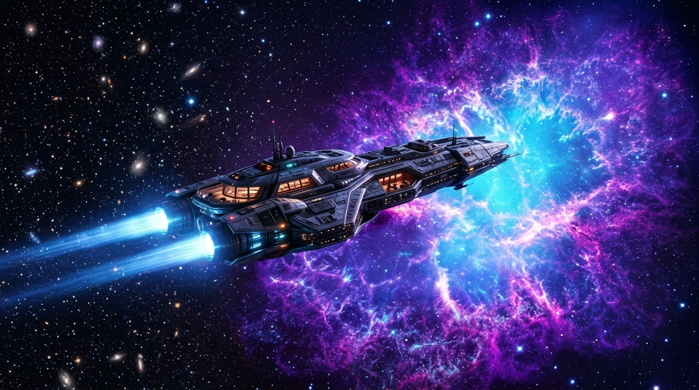

VOYAGE BEYOND
THE FINAL HORIZON
Experience the pinnacle of relativistic spaceflight. Travel at 0.92c aboard state-of-the-art interstellar cruisers to terraformed Martian colonies, Jovian cryo-oceans, and pristine extrasolar worlds.

CHARTED STAR DESTINATIONS
From terraformed Martian calderas to subterranean Jovian oceans and distant exoplanets. Drag to rotate the 3D planetary sphere or select a world below.
Mars Olympus Outpost
Nestled beneath the majestic caldera of Olympus Mons, Mars Outpost One is humanity's thriving jewel. Features climate-controlled biodomes, geothermal hot spring resorts, and vast terraforming agricultural complexes.
INTERSTELLAR RESERVATION CONSOLE
Configure your journey parameters, calculate relativistic Lorentz time dilation, and generate your verified holographic passenger boarding badge.
COCKPIT FLIGHT TELEMETRY
Live telemetry stream from the starship bridge. Real-time reactor power distribution, shield deflector harmonics, and relativistic velocity readouts.
EXPEDITION LOGS & CELESTIAL PHENOMENA
Track historical milestones of human interstellar expansion alongside active astronomical warnings across charted sectors.
Kepler-452b Genesis Mission Launch
The flagship Aethon initiates a deep-warp transition to the Cygnus sector, carrying 450 colonial pioneers and quantum bio-seed banks to humanity's first extrasolar sanctuary.
Europa Sub-Ice Trench Settlement
Deep geothermal boreholes reach the pristine liquid ocean of Europa. Construction begins on hydrothermal research dome clusters beneath 15km of protective ice.
Mars Olympus Biodome Federation
Atmospheric atmospheric pressure reaches critical terraforming benchmarks. The Olympus Mons caldera settlement achieves complete self-sustaining biosphere status.